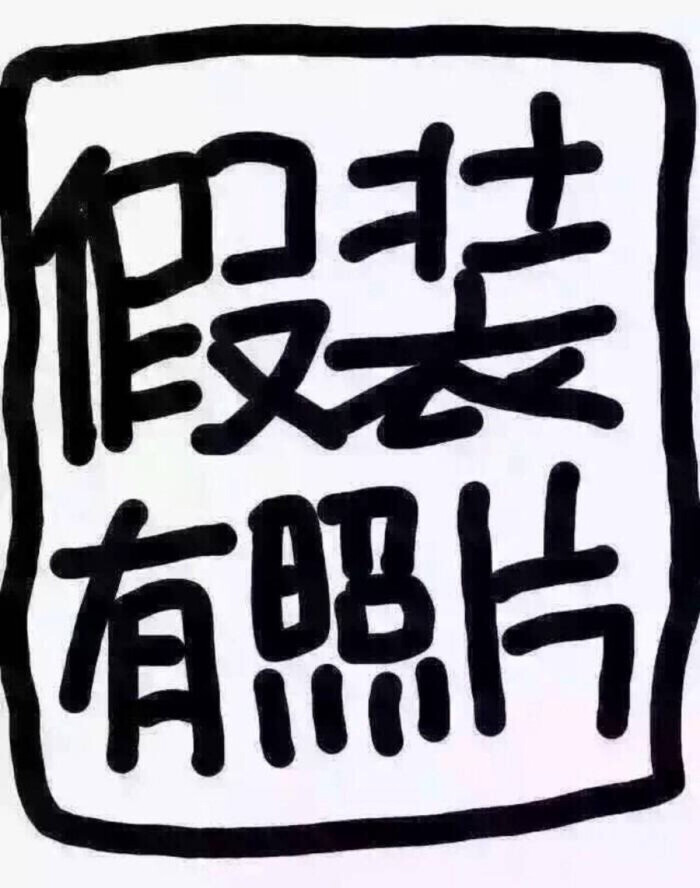

Yuquan Le |
|
|
 |
Master's DegreeDept. of Computer Science and Technology, Hunan University, Hunan Honors2019. National Scholarship. Education and ExperienceAug, 2016 - Jul, 2019. Master, Dept. of Computer Science and Technology, Hunan University, Hunan. Sep, 2012 - Jul, 2016. Undergraduate, Dept. of Computer Science and Technology, Nanchang University, Jiangxi. |